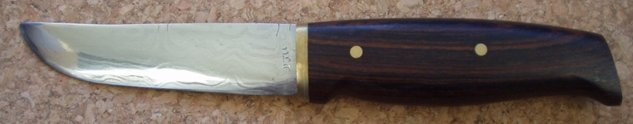
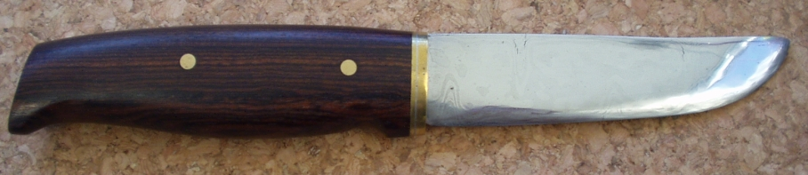

A 4 Inch Pattern Welded Knife
December 2001
This is the first successful forged knife I made. I had a lot of help from Merv who helped me to get started at knife making. It has 56 layers of mild and O1 tool steel with a rough ladder pattern ground in. Unfortunately there were several faults with this blade, and you can see some. The worst one I ground out which is why the patterns don't match each side.
The handle is Mexican Rosewood with a soldered brass spacer and finished with danish oil.
